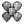
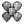
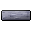

|
Отрасль "Металл" подразделяется на три профессии:
| Старательство | Добыча ресурсов руды |
|---|---|
| Литейное дело | Переплавка руды в слитки и выплавка простых инструментов |
| Кузнечное дело | Ковка сложных инструментов и оружия |
Получение профессии
| Обучение | |||||
|---|---|---|---|---|---|
| Профессия | Время | Усилие | Цена | Результат | Место обучения |
| Металл | |
|
50 |
Профессия Металл Металлургический справочник |
Деревня Тизан. Мастерская |
Заработок на рынке
В Therian Saga все профессии взаимосвязаны, и если это проявляется не напрямую (части предметов), то в прокачке навыков, добора бонусов инструментов, зелий, украшений, одежды.
Заработок начального уровня.
Экономический баланс и механика крафта выстроена таким образом, что более прокачанным персонажам необходимы предметы, добываемые или изготавливаемые начинающими. И хоть раскачанный ремесленник может всё сделать сам, но затраты времени на добычу и переработку простейших материалов и составляющих будут для него неэффективными, проще будет пофармить подземелья, делать сложные высококачественные предметы и зарабатывать на них. Отчасти заработок профессии Металл начального уровня прокачки основан на этом.
"Низкоуровневый" кузнец зарабатывает на следующих вещах:
- Расходники - лезвия для
 плотников или охотников и резцы для каменщиков как минимум из бронзы высокого качества. Их нужны большие количества.
плотников или охотников и резцы для каменщиков как минимум из бронзы высокого качества. Их нужны большие количества.
Например на постройку набора арок для приюта нужно 10 арок, для каждой 20 блоков, для каждого блока по резцу: итого 10 х 20 = 200 резцов. Для 10 рам - 200 лезвий. Лезвия нужны и для охотников (разделка туш), и для дизайнеров (изготовление брони и выделка шкур). - Добыча руд, кусков металла, крафт слитков. Их стоит продавать в количествах 10 и более.
- Слитки олова используются в дальнейшей переплавке в
 Звено доспеха,  Чешуйка доспеха, Пластины доспехов, Клепки доспехов для крафта брони. Их использование ремесленниками обусловлено тем, что параметры брони зависят от нескольких материалов (например, звенья из олова + пластины из бронзы для Шаблон:Доспехи на более высоких уровнях.
Звено доспеха,  Чешуйка доспеха, Пластины доспехов, Клепки доспехов для крафта брони. Их использование ремесленниками обусловлено тем, что параметры брони зависят от нескольких материалов (например, звенья из олова + пластины из бронзы для Шаблон:Доспехи на более высоких уровнях.
- Медные слитки по аналогии с оловянными, но ещё используются в профессии Инженерное дело для создания машин.
- Самый оптимальный вариант - слитки бронзы. В производстве они дешевле чем медные, но рыночная цена их выше.
- Гематитовая руда, Куски железа всегда нужны для железа и стали.
- Куски цинка и цинковые слитки для  Цинковая столешница в тавернах.
- Слитки олова используются в дальнейшей переплавке в
- Переплавка песка. Это отличный способ начальной прокачки литья одновременно. Если у вас есть знакомый каменщик, то он сможет скидывать вам Песок, а вы - плавить из песка стекло, из которого делается ювелирами стеклотара для зелий, дубителей, также делаются некоторые ювелирные детали.
- Инструменты. Здесь будьте внимательны - нет смысла делать инструменты хуже чем продаются в магазинах Соколинии. Предварительно проверьте какие бонусы у инструментов в Городе Соколиния, Торговый район.
Докачавшись до крафтов из железа
- Железное оружие с показателями 28 и выше (более слабое легко выбивается и даётся за квесты).
- Железные инструменты.
- Серебряные инструменты.
- Части доспехов из железа.
- Расходники из железа.
Открыв Секрет стали вы сможете продавать:
- Стальное оружие с бонусами 30 и выше.
- Стальные слитки.
- Стальные инструменты с бонусами 30 и выше.
- И др.
При открытии производства кольчато-пластинчатых доспехов
Вы сможете одновременно качать Кузнечное дело, открывать новые рецепты и продавать результаты ковки - элементы доспехов и щиты. Здесь адекватная стоимость доспехов плохого и грубого качества не будет окупать затраты времени на добычу и переработку ресурсов, но будет стабильно приносить золото. В среднем на 1 элемент в общем требуется  4 часа работы без учёта добычи.
4 часа работы без учёта добычи.
Основное, что Вам нужно помнить:
- Цену инструментов, доспехов, оружия и т.д. определяет не рыночная цена материалов, а потребительские качества.
- Научитесь искать на рынке товары - по фильтрам, категориям, бонусам, частям названий чтобы сориентироваться в текущей рыночной ситуации, ценах.
- Помните, всегда найдётся кто-то, менее жадный чем вы, не прогорите на комиссии рынка.
- Читайте чат, там часто ищут поставщиков.
- Продавайте через чат - иногда это быстрее.
- Иногда продать изделие выгоднее НПЦ-торговцу. Аналог на рынке будет стоить дешевле.